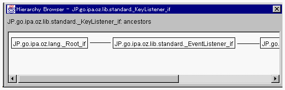

クラスの継承関係を照会する：継承ブラウザを開く
継承ブラウザによって、祖先クラスの継承関係を知ることができます。

- １．クラスブラウザの Hierarchy メニューから ancestors メニュー項目を選択してください。
継承ブラウザが開かれ、そのクラスの祖先クラスの継承関係が表示されます。

- インタフェースが照会されているクラスブラウザから上記操作を行うと、インタフェースに関する祖先クラスの継承関係が照会できます（インタフェース識別子による継承関係）。
クラスが照会されているクラスブラウザから上記操作を行うと、動作部識別子によって祖先クラスの継承関係が表示されます。
２．継承ブラウザを閉じる場合には、継承ブラウザウィンドウの右上の  をクリックしてください。
をクリックしてください。
(c) 1996-1998 IPA, ETL, AT21, FSIABC, FXIS,
InArc, MRI, NUL, SBC, Sharp, TEC, TIS. All rights reserved.